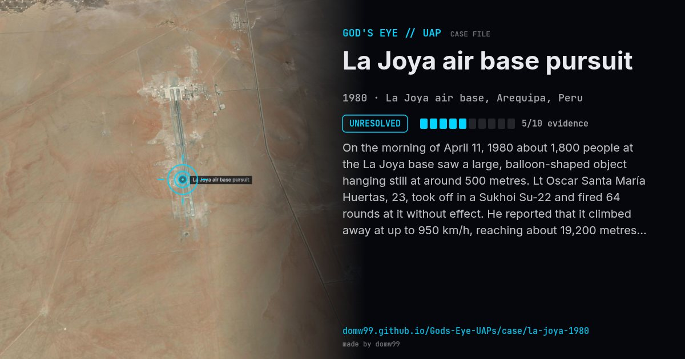

La Joya air base pursuit

On the morning of April 11, 1980 about 1,800 people at the La Joya base saw a large, balloon-shaped object hanging still at around 500 metres. Lt Oscar Santa María Huertas, 23, took off in a Sukhoi Su-22 and fired 64 rounds at it without effect. He reported that it climbed away at up to 950 km/h, reaching about 19,200 metres, and stopped so suddenly that he had to swerve to avoid it. Peruvian army radar was said to show only his aircraft, while operators saw the object by eye. The engagement is said to have lasted 22 minutes, until his fuel ran low. The Peruvian Air Force kept the matter classified for decades; U.S. defence documents titled “UFO sighted in Peru” have since been released.
Explanation
Peru’s air force kept the case quiet for decades; no explanation has been published. Peru has since set up an office (now DIFAA) for aerial anomalies, and U.S. documents on the case were later released.
What was seen
Shape: Large balloon-shaped object
Witnesses: Lt Oscar Santa María Huertas; some 1,800 people at the base
Duration: About 22 minutes